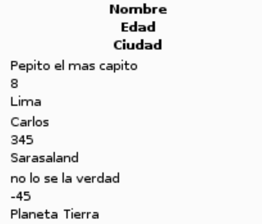

(soy demasiado vago para poner el texto en blanco y poner el fondo)
En 2007, se lanzaba al mercado en Estados Unidos el Nintendo DS Browser, basado en Opera 8.50, para utilizarlo, si o si necesitabas el Memory Expansion Pak, que añadia 8mb de ram adicionales, el navegador fue sucedido por el DSi Browser
Pero entonces, que demonios, porque no haces una web para algo muchisimo mas moderno en vez de una consola de hace mas de dos decadas? Si te soy sincero, no lo se, pero pense que seria un reto divertido
El navegador de la Nintendo DS no soporta nada de HTML5 (El navegador de la DSi si es algo compatible con HTML5, pero en el test da la friolera de 65 sobre 555) y encriptaciones modernas, esto hace que la mayoria de paginas web no funcionen
Te imaginas que TikTok funcionara en esto?, yo tampoco, de hecho, ni siquiera puedes entrar a Google, y cuando tu navegador no puede ni entrar a Google, ya sabes que vas a pasar un mal rato
Un dia me vi un video del youtuber Pococho (formalmente "nos sentamos a charlar de videojuegos") En el que probaba el navegador, lo primero que intento fue buscarse a si mismo (como hacen la mayoria de youtubers con este tipos de videos) sin exito
La unica pagina web que funciono fue la pagina de un tal catzmeow995's, fue hecha para probar el navegador de la Wii, pero funciona en la Nintendo DS (con errores), aun asi, el hecho de que cargaba era una hazaña
Y pues... venga, voy a intentarlo, y aqui estamos (:
Vale, ni siquiera tengo una DS, a ver, tengo una DSi, pero el navegador no es compatible, asi que no me quedo de otra que usar el emulador melonDS y una rom de internet (es ilegal pero, a quien le importa?)
Ya comprobe que las imagenes son compatibles, los gif parece que no, una cosa graciosa es que los h1 se muestran en el DS browser, pero no en el navegador de la DSi, asi que navegador patata podrida 1, navegador patata 0, jeje
Tras hacer una busqueda en wikipedia, comprobe lo siguiente:
Se me ocurrio la idea de usar tablas despues de que la IA de visual studio me autocompletara todo, bueno ahi tienes una tabla
Como puedes ver, el navegador de la DS ni siquiera puede mostrar bien unas simples tablas
muchas de las paginas web hoy en dia usan https, el problema es que el navegador de la DS no soporta http, esto, sumado a que no soporta JavaScript, HTML5, poco CSS, y la baja potencia de la DS, hace que no funcione casi nada, una pena
Iba a probar TheOldNet, pero da un error 504 al cargar una pagina, dare actualizaciones cuando este disponible
Seria gracioso emular DS en una DS, pero eso es obviamente imposible
En un principio la pagina iba a estar en Github Pages, pero Github Pages usa https, que el navegador de DS no soporta, para usar http, habia que usar un dominio personalizado, pero yo no soy de pagar por dominios que casi nadie va a ver, asi que no, no esta
Lo unico que puedes hacer es descargar el codigo fuente de la pagina y alojarlo en tu PC con Python, lo he usado para testear en el emulador y funciona
Si quieres probarlo, descarga el codigo fuente de la pagina aqui, esta correctamente optimizada para correr en una DS
Nah, esto no sirve para nada, como mucho el navegador de DSi, pero solo para cargar exploits o para hacer este tipo de paginas
Puedo poner a prueba algun otro navegador viejo, conozco que la Nintendo 64DD tenia un navegador, pero seguro que sera peor que el de la DS, ademas, de donde saco yo una 64DD?
Bueno, eso es todo, os mantendre actualizados en el futuro, chau
Por cierto, nada que ver, pero me gusta la fuente del navegador de la DS